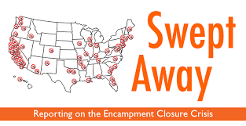

Homelessness: An Urgent Issue
Housing represents the fundamental solution to the problem of homelessness, but with the lack of affordable housing and the limited scale of housing assistance programs contributing to the current housing crisis and to homelessness. In addition, 44% of un-housed American residents, of working age and condition, performed some type of work for pay in any given month, but most do not make enough to obtain and retain afford permanent housing. Additionally, many people experiencing homelessness are unable to earn an income due to a permanent or temporary disabling condition.
Homeless Bill of Rights
Homeless Bill of Rights measures work to ensure that homeless individuals are:
- Protected against segregation, laws targeting homeless people for their lack of housing and not their behavior, and restrictions on the use of public space.
- Granted privacy and property protections.
- Allowed the opportunity to vote and feel safe in their community without fear or harassment.
- Provided broad access to shelter, social services, legal counsel and quality education for the children of homeless families.
Get Involved and Make a Difference
You can help end homelessness by simply CAREing!
- C- Contribute (food drives, money, etc.)
- A- Advocate
- R- Reach Out (volunteering)
- E- Educate
CONTRIBUTE: Clothing, household goods or other items, books, computers, homeless "survival kits", phone calls, and job opportunities are always welcome! It is very important to support the homeless during their time alone or on the streets and in the transition of getting back into society.
ADVOCATE: Advocacy is critical to creating the systemic changes needed to end homelessness. Advocacy means working with people experiencing homelessness to bring about positive changes in policies and programs on the local, state, and federal levels. It means working with various sectors of the community (e.g. city/county officials, members of Congress, direct service providers, and the business community) to develop workable strategies for responding to homelessness. It also means changing your language and behaviors in small ways that may contribute to larger changes in the way people experiencing homelessness are seen and treated in our society.
REACH OUT: Some ways that you might help are by working in a shelter, help to build or fix up houses or shelters, offer professional skills directly or assist in job training, share hobbies, invite people experiencing homelessness to a community event, organize an event at a shelter, work with children, and involve others!
EDUCATE: Learn about the root causes of homelessness and teach others. NCH maintains updated Facts Sheets on many aspects of homelessness including causes, numbers, and special issues. Read the Fact Sheets to familiarize yourself with the latest information, and then share what you learn with your community—your place of worship, school, colleagues, friends, neighbors, media, and elected officials. Be sure to follow NCH on Facebook and Twitter and repost to spread awareness!